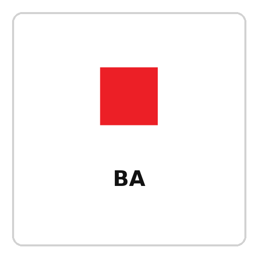

홈 > 브랜드 매거진 > Autex Acoustics
Autex Acoustics
Autex Acoustics는 2022년에 기록된 Designed by Marx 계열의 브랜드 아이덴티티 사례입니다. Marx Design가 아이덴티티 작업의 디자이너로 기록되어 있습니다. 공개 섹션 정보는 제한적이지만, 에셋 구조를 통해 시각 아이덴티티 사례로 분류됩니다. 전체 에셋 15개, 이미지 13개, 영상 2개, 로컬 저장 이미지 13개가 함께 기록되어 있어 로고, 응용 이미지, 모션/영상 여부까지 BI·CI 관점에서 추적할 수 있습니다.
산업 분야 브랜드·비즈니스 · 공개 등급 편집 검수 · 브랜드 평가 4 ★

Au
Autex Acoustics
한눈에 보는 브랜드
브랜드 관점
Autex Acoustics 항목은 기업 연혁보다 시각 아이덴티티의 완성도를 읽는 데 적합한 자료입니다. Designed by Marx 분류 안에서 어떤 브랜드가 로고, 타입, 컬러, 아트 디렉션, 애플리케이션을 하나의 시스템으로 묶는지 보여주며, 산업 정보와 별도로 BI/CI 디자인 레퍼런스 축을 형성합니다.
일부 상세 아이덴티티는 멤버십 잠금 상태로 기록되어 공개 메타데이터 중심으로만 정리됩니다.
브랜드 아이덴티티
Autex Acoustics의 아이덴티티 메타데이터는 로고와 응용 에셋를 중심으로 정리됩니다. 공개 메타데이터에서 별도 컬러 팔레트는 확인되지 않았습니다.
공개 서체 정보는 별도로 확인되지 않았습니다.
제품과 서비스
Autex Acoustics 항목의 제품·서비스 정보는 일반 상품 카탈로그가 아니라 브랜드 아이덴티티 산출물 기준으로 정리됩니다. 전체 에셋 15개, 이미지 13개, 영상 2개, 로컬 저장 이미지 13개를 통해 정지 이미지와 영상 에셋의 비중을 확인할 수 있고, 이는 로고 적용, 컬러 시스템, 캠페인 톤, 패키지 또는 공간 적용 가능성을 검토하는 출발점이 됩니다.
사람들
타임라인
BI/CI 변천사
확인된 BI/CI 이미지가 아직 없습니다.